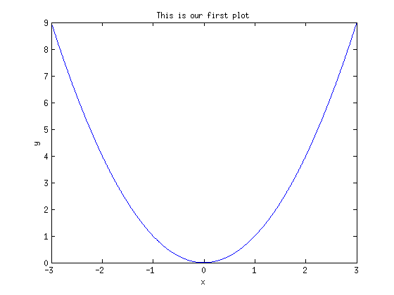
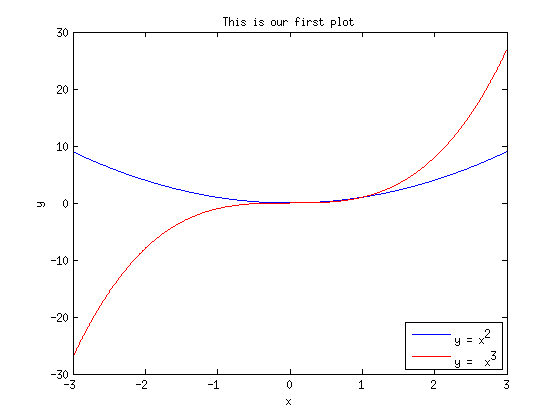

Math 340 Lab - Introduction to MATLAB
Contents
Ivana Seric
is28@njit.edu Office: Culm 214F - Monday 1-2:30pm
clear all % clear all variables in the workspace clc % clear command window % Variable examples: % Integer: integerExample = 5; % semicolon surpreses output % Floating point number floatExample = 5.1; % Charaters and strings stringExample = 'This is a string' ; % note single quatation % Arrays arrayExample1 = [1 2 3 4 5]; % row array arrayExample2 = [6; 7; 8; 9; 10; ]; % column array arrayExample3 = 0:1:10; % array with elements being integers from 0 to 10 arrayExample4 = linspace(0,10,1000); % array with 1000 equally spaced elements from 0 to 10 % Matrices A = [1 2 3; 4 5 6; 7 8 9];
Operations with arrays are TERMWISE
newArray1 = arrayExample1 + 1; % adds one to each element of arrayExmaple1 newArray2 = 2*arrayExample2; % multiplies each element of arrayExample2 by 2 newArray3 = arrayExample3.^2 ; % notice the dot newArray4 = 1./arrayExample4; % notice the dot
Plot example
clear all clc x = linspace(-3,3,1000); y1 = x.^2; plot(x,y1); xlabel('x')
ylabel('y')
title('This is our first plot')
hold on

y2 = x.^3;
plot(x,y2,'r')
legend('y = x^2', 'y = x^3')
legend('Location','SouthEast')

Function example with formated output
mySum(5) % click on the function name to open
N Sum
==== ====
1 1
2 3
3 6
4 10
5 15
Least Square Assignment - Extra credit
Write a code that will find the least squares linear fit for given data points
x = [1 3 5 7 8 ];
y = [14 17 19 20 22];
Plot the data points and the fit line on the same plot such that the data points are triangles with blue sides and with red center, and plot the fit line in dark green color with line width 2. Make sure to include all axes labels, legend and title for your plot.
One MATLAB trick
You can grab the code from this website by using 'grabcode' command. Simply type "grabcode('website_link')" in command window (without " ").